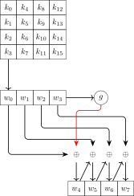

2.2. AES¶
Phần này sử dụng tài liệu mô tả thuật toán AES của NIST [19].
AES biến đổi theo khối \(128\) bit, sử dụng mô hình mạng SPN.
Bốn phép biến đổi chính là Add Round Key, Substitute Bytes, Shift Rows và Mix Columns.
Quá trình giải mã sử dụng phép biến đổi ngược của bốn phép biến đổi trên là Inverse Sub Bytes, Inverse Shift Rows, Inverse Mix Columns. Đối với Add Round Key bản thân là phép XOR nên phép biến đổi ngược là chính nó.
AES hỗ trợ key với các kích thước: \(128\) bit, \(192\) bit và \(256\) bit.
Đối với kích thước khóa \(128\) bit, AES dùng hàm Expand Key để mở rộng khóa thành \(44\) words, mỗi word có \(32\) bits, với key \(128\) bit thành \(11\) cụm khóa con. Mỗi \(4\) words làm tham số cho một phép Add Round Key.
Mỗi block bản rõ \(16\) byte \(p_0\), \(p_1\), ..., \(p_{15}\) được tổ chức dưới dạng một ma trận \(4 \times 4\) (gọi là ma trận state)
Các phép biến đổi Add Round Key, Substitute Bytes, Shift Rows, Mix Columns được thực hiện trên ma trận \(4 \times 4\) này.
Các phép tính số học trong AES được thực hiện trong \(\mathrm{GF}(2^8)\) với đa thức tối giản là \(f(x) = x^8 + x^4 + x^3 + x + 1\).
2.2.1. Substitute Bytes¶
2.2.1.1. Substitute Bytes¶
Ta sử dụng một bảng tra cứu \(16 \times 16\) (S-box).
Điền các số từ \(0\) tới \(255\) theo từng hàng.
Thay thế mối byte trong bảng bằng nghịch đảo trong \(\mathrm{GF}(2^8)\). Quy ước \((00)^{-1} = 00\).
Với mỗi byte trong bảng, ta kí hiệu \(8\) bit là \(b_7 b_6 b_5 b_4 b_3 b_2 b_1 b_0\). Thay thế mỗi \(b_i\) bằng \(b_i'\) như sau
với \(c_i\) là bit thứ \(i\) của số 0x63.
Việc tính trên tương đương với phép nhân trên ma trận \(\mathrm{GF}(2)\) là \(B' = XB + C\)
Ma trận \(X\) khả nghịch, do đó S-box là một song ánh.
Dựa vào bảng S-box, Substitute Bytes thực hiện như sau: mỗi byte trong ma trận state \(S\) dưới dạng thập lục phân là \(xy\) sẽ được thay bằng giá trị ở hàng \(x\) và cột \(y\) của S-box.
2.2.1.2. Inverse Sub Bytes¶
Ta cần xây dựng bảng Inverse Sub Bytes (IS-box).
Việc xây dựng bảng này giống với bảng S-box ở bước 1 và 2. Tại bước 3:
với \(d_i\) là bit thứ \(i\) của số 0x05.
2.2.1.3. Ý nghĩa¶
Bảng S-box dùng để chống lại known-plaintext và là bước duy nhất trong bốn bước không có quan hệ tuyến tính.
2.2.2. Shift Rows¶
2.2.2.1. Shift Rows¶
Trong Shift Rows, các dòng của ma trận state được biến đổi như sau:
Dòng thứ nhất giữ nguyên.
Dòng 2 dịch vòng trái 1 ô.
Dòng 3 dịch vòng trái 2 ô.
Dòng 4 dịch vòng trái 3 ô.
2.2.2.2. Inverse Shift Rows¶
Các dòng thứ 2, 3, 4 dịch phải tương ứng 1, 2, 3 ô.
2.2.2.3. Ý nghĩa¶
Xáo trộn các byte để tạo ra các cột cho Mix Columns.
2.2.3. Mix Columns¶
2.2.3.1. Mix Columns¶
Mix cols biến đổi từng cột của ma trận state một cách độc lập bằng phép nhân đa thức. Giả sử cột đầu tiên của ma trận state viết dưới dạng đa thức là
với \(z \in \mathrm{GF}(2^8)\).
Khi đó \(f(z)\) sẽ được nhân với \(a(z) = 3z^3 + z^2 + z + 2\), lưu ý rằng tất cả hệ số, phép cộng và nhân thực hiện trên \(\mathrm{GF}(2^8)\), và sau đó modulo cho \(n(z) = z^4 + 1\).
Bốn byte hệ số của kết quả sẽ thay thế cho bốn byte tương ứng trong cột. Nếu viết dưới dạng ma trận, ta có
Lưu ý rằng các số \(01\), \(02\), \(03\) tuy viết dưới dạng thập phân nhưng khi tính toán phải ở dạng \(\mathrm{GF}(2^8)\). Việc sử dụng \(1\), \(2\), \(3\) giúp tăng tốc độ tính toán vì \(1\) và \(2\) chỉ cần phép dịch bit, còn \(3\) là XOR của \(1\) và \(2\).
2.2.3.2. Inverse Mix Columns¶
Lúc này ma trận nghịch đảo có dạng
2.2.3.3. Ý nghĩa¶
Mỗi cột mới chỉ phụ thuộc vào một cột ban đầu. Khi kết hợp với Shift Rows, sau hai vòng, mỗi bit đầu ra phụ thuộc vào toàn bộ \(128\) bit đầu vào; đây là tính khuếch tán.
2.2.4. Add Round Key¶
2.2.4.1. Add Round Key¶
\(128\) bit của ma trận state được XOR với \(128\) bit của khóa con từng vòng (\(4\) dword \(32\) bit). Phép biến đổi ngược của Add Round Key là chính nó.
2.2.4.2. Ý nghĩa¶
Sự kết hợp với khóa tạo ra tính làm rối (confusion).
2.2.5. Expand Key¶
2.2.5.1. Expand Key¶
Đầu vào của thao tác Expand Key là \(16\) bytes (\(4\) words) của khóa, sinh ra một mảng \(44\) words (\(176\) bytes) sử dụng cho \(11\) vòng AES, mỗi vòng \(4\) words.

Từ bốn word đầu vào \(w_0 w_1 w_2 w_3\), lần lặp đầu sinh ra \(w_4 w_5 w_6 w_7\), lần lặp thứ hai sinh ra \(w_8 w_9 w_{10} w_{11}\), ...
Thuật toán 2.2
if \(i \bmod 4 = 0\)
\(g \gets \mathsf{SubWord}(\mathsf{RotWord}(w_{i-1})) \oplus \mathrm{Rcon}[i/4]\)
\(w_i = w_{i-4} \oplus g\)
else
\(w_i = w_{i-4} \oplus w_{i-1}\)
endif
Trong đó:
\(\mathsf{RotWord}\) dịch vòng trái \(1\) byte, nghĩa là từ bốn byte \(b_0 b_1 b_2 b_3\) trở thành \(b_1 b_2 b_3 b_0\).
\(\mathsf{SubWord}\) thay mỗi byte trong word bằng bảng S-box.
\(\mathrm{Rcon}\) là một mảng hằng số gồm \(10\) words tương ứng với \(10\) vòng AES. \(4\) bytes của một phần tử \(\mathrm{Rcon}[j]\) là \(\mathrm{RC}[j], 0, 0, 0\) với \(\mathrm{RC}[j]\) là mảng \(10\) bytes như sau
\(j\) |
\(1\) |
\(2\) |
\(3\) |
\(4\) |
\(5\) |
\(6\) |
\(7\) |
\(8\) |
\(9\) |
\(10\) |
|---|---|---|---|---|---|---|---|---|---|---|
\(\mathrm{RC}[j]\) |
\(1\) |
\(2\) |
\(4\) |
\(8\) |
\(10\) |
\(20\) |
\(40\) |
\(80\) |
\(18\) |
\(36\) |
2.2.5.2. Ý nghĩa của Expand Key¶
Dùng để chống lại known-plaintext (giống Sub Bytes dùng S-box). Đặc điểm của Expand Key gồm:
Biết một số bit của khóa hay khóa con không thể tính được các bit còn lại.
Không thể suy ngược toàn bộ khóa từ một phần thông tin khóa.
Khuếch tán: mỗi bit của khóa chính tác động lên tất cả khóa con.
2.2.6. Kết luận¶
Mã hóa AES đơn giản và có thể chạy trên các chip \(8\) bit.
AES cung cấp ba biến thể cho độ dài khóa là:
\(128\) bits: \(44\) words \(4\) bytes cho \(10\) vòng (\(11\) lần ARK);
\(192\) bits: \(52\) words \(4\) bytes cho \(12\) vòng (\(13\) lần ARK);
\(256\) bits: \(60\) words \(4\) bytes cho \(14\) vòng (\(15\) lần ARK).
2.2.7. Về phép Mix Columns¶
Phép nhân đa thức với hệ số trong \(\mathrm{GF}(2^8)\) tương đương với phép nhân ma trận dùng trong MixColumns như sau.
Giả sử ma trận trạng thái trước khi bước vào phép tính Mix Column của AES là
Phép tính Mix Column lấy mỗi cột của ma trận trạng thái trên làm tham số cho đa thức với hệ số trong \(\mathrm{GF}(2^8)\) và nhân với đa thức \(c(z) = 2 + z + z^2 + 3z^3\) rồi modulo cho \(z^4 + 1\).
Giả sử với cột đầu tiên, ta viết hệ số theo thứ tự bậc tăng dần \(d(z) = c_0 + c_4 z + c_8 z^2 + c_{12} z^3\).
Tính trong \(\mathrm{GF}(2^8)\):
Trong \(\mathrm{GF}(2^8)\) thì mọi phần tử đều có tính chất \(2 x^n = 0\), tương đương với \(x^n = -x^n\). Do đó
Suy ra
Như vậy xét hệ số lần lượt trước \(1\), \(z\), \(z^2\) và \(z^3\) thì tương đương với phép nhân ma trận
Đây chính là kết quả cần tìm.
2.2.8. Phiên bản AES thu nhỏ¶
Để khảo sát đại số mà không phải xử lí ngay hệ AES-128 rất lớn, Cid, Murphy và Robshaw xây dựng họ mã khối \(\operatorname{SR}(n,r,c,e)\) giữ lại cấu trúc của AES nhưng cho phép thay đổi kích thước trạng thái [20]. Các tham số có ý nghĩa như sau:
\(n\) là số vòng, \(1 \leqslant n \leqslant 10\);
\(r \in \{ 1, 2, 4 \}\) và \(c \in \{ 1, 2, 4 \}\) là số hàng và số cột;
\(e \in \{ 4, 8 \}\) là số bit của mỗi phần tử trạng thái.
Một khối gồm \(rc\) phần tử thuộc \(\FF_{2^e}\). Khi \(e=4\) và \(e=8\), các trường lần lượt được biểu diễn bởi
Mọi vòng của \(\operatorname{SR}\) đều gồm SubBytes, ShiftRows, MixColumns và AddRoundKey. Đây là một khác biệt với AES: vòng cuối của AES không có MixColumns [19]. Phần dưới xét mô hình \(\operatorname{SR}(n, 2, 2, 4)\), có trạng thái và khóa chỉ gồm \(16\) bit.
2.2.8.1. S-box 4 bit¶
Giả sử ta có \(x = \sum_{i=0}^3 x_i t^i \in \FF_{2^4}\) và đặt \(y = x^{-1} =. \sum_{i=0}^3 y_i t^i\), với quy ước \(0^{-1}=0\). S-box thực hiện phép nghịch đảo rồi áp dụng ánh xạ affine
Do đó, nếu \(S:\FF_2^4\to\FF_2^4\) là S-box thì SubBytes là ánh xạ
Ánh xạ affine trên cũng có thể viết dưới dạng đa thức trong vành \(\FF_2[t]/(t^4+1)\):
Thật vậy, phép nhân với \(a\) cho ma trận tuần hoàn trong công thức S-box, còn cộng \(b\) tương ứng với cộng vector \((0,1,1,0)^\top\). Vì vậy S-box là ánh xạ hợp thành \(A\circ I\), trong đó \(I(x)=x^{14}\) trên \(\FF_{2^4}\).
2.2.8.2. ShiftRows và MixColumns¶
Với trạng thái
ShiftRows đổi chỗ hai phần tử ở hàng thứ hai, còn MixColumns nhân mỗi cột với ma trận trên \(\FF_{2^4}\):
Khi ghép bốn nibble thành vector của \(\FF_2^{16}\), đặt
Hai phép biến đổi tuyến tính được biểu diễn bởi
trong đó \(I_4\) và \(O_4\) lần lượt là ma trận đơn vị và ma trận không cấp \(4\).
2.2.8.3. Phương trình biểu diễn một vòng¶
Gọi \(b_i\in\FF_2^{16}\) là đầu vào vòng \(i\), \(k_i\in\FF_2^{16}\) là khóa vòng và \(c_i=\mathcal S(b_i)\). Một vòng đầy đủ được viết gọn thành
hay dưới dạng vector cột,
Vì hai ma trận tuyến tính khả nghịch, đầu ra của lớp S-box có thể được biểu diễn trực tiếp theo đầu ra vòng và khóa vòng:
Với bản rõ đã biết \(p\) và bản mã \(c\), điều kiện biên là \(b_0=p+k_0\) và \(b_n=c\). Công thức (2.6) là phép thế dùng để loại các biến trung gian sau SubBytes khi xây dựng hệ phương trình cho từng vòng.
2.2.8.4. Hệ phương trình bậc hai của S-box¶
Các hệ phương trình bậc hai nhiều biến cho S-box AES có thể được sinh tự động bằng SageMath [21]. Với S-box 4 bit, cần điều chỉnh mô hình để quy ước \(0^{-1}=0\) không tạo ra phương trình sai \(0=1\).
Cho \(x,y\in\FF_{2^4}\) và \(y=x^{-1}\). Quan hệ \(xy=1\) chỉ đúng khi \(x\ne0\). Nhân thêm \(x\) và liên tiếp bình phương trong trường đặc số \(2\) cho
Đẳng thức này đúng cả khi \(x=0\); đổi vai trò \(x,y\) cũng cho
So sánh bốn hệ số theo cơ sở \(1,t,t^2,t^3\) trong mỗi đẳng thức thu được tám phương trình bậc hai. Ba phương trình thuần nhất còn lại đến từ ba hệ số bằng không của \(xy=1\). Cuối cùng, từ (2.4) và \(a^4=1\pmod{t^4+1}\), thay
vào các phương trình trên. Kết quả là hệ \(F(x_0,\ldots,x_3,z_0,\ldots,z_3)=0\) gồm \(3+4+4=11\) phương trình bậc hai mô tả chính xác quan hệ vào--ra của S-box. Phương pháp tương tự cho S-box 8 bit của AES tạo hệ gồm \(7+8+8=23\) phương trình [22].
Để mô hình hóa một vòng, áp dụng 11 phương trình này cho từng cặp nibble
rồi thay mỗi \(c^{(i)}_j\) bằng biểu thức tuyến tính trong (2.6). Sau một vòng, mỗi bit đầu ra phụ thuộc vào tám bit đầu vào; sau hai vòng, mỗi bit đầu ra phụ thuộc vào toàn bộ 16 bit.
2.2.8.5. Quá trình sinh khóa thu nhỏ¶
Viết khóa vòng dưới dạng bốn nibble \(k_i=k_{i,0}\Vert k_{i,1}\Vert k_{i,2}\Vert k_{i,3}\). Với \(q\in\{0,1\}\), lịch sinh khóa là [20]
trong đó \(\kappa_i\) là hằng số vòng. Với một vòng và \(\kappa_1=1\), công thức trở thành
Hai phương trình đầu được mô hình hóa bằng hai bản sao của hệ 11 phương trình S-box; hai phương trình sau là tuyến tính. Nếu tính cơ sở Gröbner với thứ tự lex
ta thu được các đa thức
Do đó mọi bit của \(k_1\) có thể được thay bằng đa thức theo 16 bit của khóa ban đầu \(k_0\).
2.2.8.6. Hệ phương trình cho một vòng hoàn chỉnh¶
Với một cặp bản rõ--bản mã đã biết \((p,c)\), phương trình vòng là
Thay 16 bit của \(k_1\) bằng các đa thức \(F_i\) trong (2.7), rồi áp dụng hệ 11 phương trình cho mỗi trong bốn S-box, ta thu được 44 phương trình bậc hai theo 16 biến khóa. Đây là hệ đa thức biểu diễn đầy đủ một vòng \(\operatorname{SR}(1,2,2,4)\) và có thể được giải bằng cơ sở Gröbner.